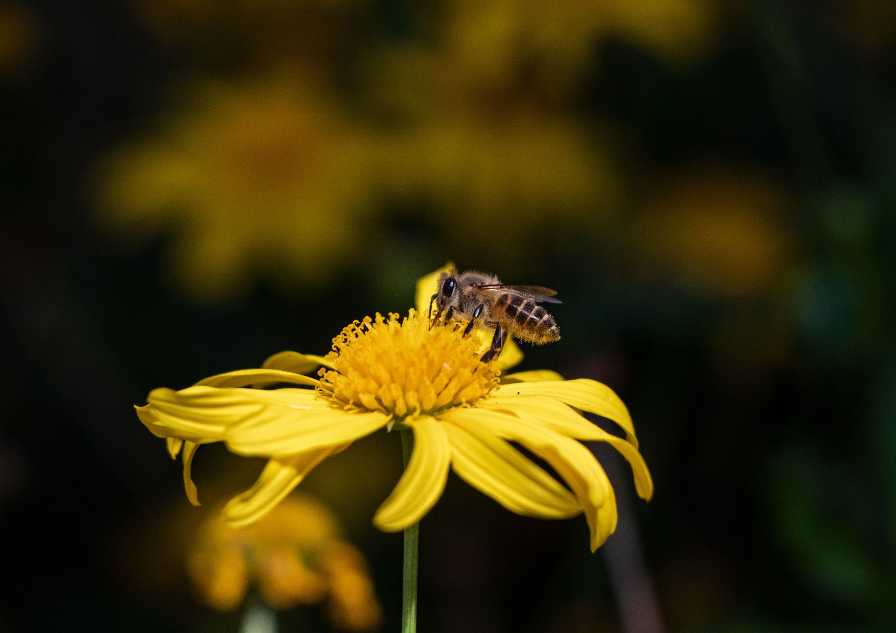
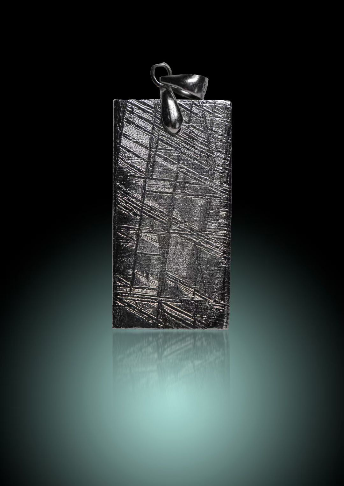

叶凯帆摄影作品集
捕捉光影之美，定格瞬间感动
精选作品
BLUE(你好)
照片: BLUE(你好)
人像BLUE（感受）
照片: BLUE（感受）
人像哇.你看（宝石展览）
照片: 哇.你看（宝石展览）
人像面具
照片: 面具
人像白鹭
照片: 白鹭
动物络新妇属蜘蛛
照片: 络新妇属蜘蛛
动物花间舞者1
照片: 花间舞者1
动物

花间舞者2
照片: 花间舞者2
动物孔雀石（飞思相机拍摄）
照片: 孔雀石（飞思相机拍摄）
矿物水晶
照片: 水晶
矿物水晶（白）
照片: 水晶（白）
矿物玛瑙（切片）
照片: 玛瑙（切片）
矿物琥珀
照片: 琥珀
矿物紫水晶
照片: 紫水晶
矿物红水晶
照片: 红水晶
矿物绿莹石
照片: 绿莹石
矿物绿萤石（青）
照片: 绿萤石（青）
矿物钻石
照片: 钻石
矿物陨石（美国）
照片: 陨石（美国）
矿物

陨石（首饰）
照片: 陨石（首饰）
矿物五华楼
照片: 五华楼
纪实众
照片: 众
纪实卓别林（中场）
照片: 卓别林（中场）
纪实卓别林（落幕）
照片: 卓别林（落幕）
纪实
喜洲古镇
照片: 喜洲古镇
纪实高楼大厦
照片: 高楼大厦
纪实眼
照片: 眼
艺术红首
照片: 红首
艺术红首（倒影）
照片: 红首（倒影）
艺术麻雀（水墨）
照片: 麻雀（水墨）
艺术大理（油画）
照片: 大理（油画）
风景暴雨
照片: 暴雨
风景朋友之间
照片: 朋友之间
其他矿物宝石（书籍）
照片: 矿物宝石（书籍）
其他
×

关于我
我是叶凯帆，一名热爱摄影的专业摄影师。我专注于风景、人像和纪实摄影，致力于通过镜头捕捉世界的独特瞬间和情感。
我的作品曾在多个摄影展览中展出，并获得了多项摄影奖项。我相信每一张照片都有其独特的故事和情感，我希望通过我的作品，能够让观者感受到那一刻的美丽与感动。
荣誉奖项
×

联系方式
yzkhfl@qq.com
+86 180 2988 6425